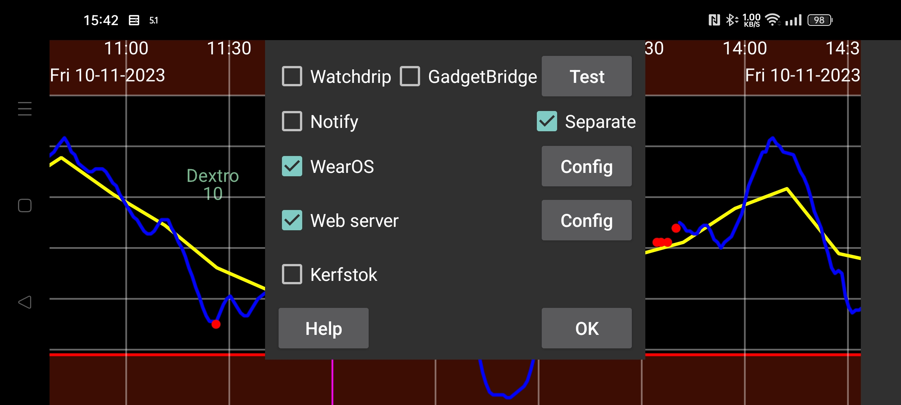

be de fr it nl pl pt ru tr uk zh en
Obecnie Juggluco ma sześć sposobów na uzyskanie wartości glukozy na zegarku.
Kiedy włączona jest opcja Powiadomienia, po każdym nadejściu nowej wartości glukozy tworzone jest powiadomienie dla systemu Android. Na niektórych zegarkach powiadomienia są wysyłane do zegarka tylko wtedy, gdy zostanie utworzone nowe powiadomienie i dla nich należy włączyć opcję Oddzielne. W przypadku tych zegarków należy również włączyć opcję Oddzielne , aby otrzymywać powiadomienia o alarmach na zegarku.
Po włączeniu tej funkcji Juggluco wysyła wartości glukozy do Watchdrip+. Watchdrip+ wysyła tarcze zegarka pokazujące wartości glukozy do zegarków MiBand/Amazfit.
(GadgetBridge) umożliwia wyświetlanie informacji o pogodzie na zegarkach MiBand/Amazfit. Po włączeniu opcji Gadgetbridge Juggluco będzie wysyłać wartości glukozy do GadgetBridge pod pretekstem informacji o pogodzie. Ma to tę przewagę nad Watchdrip, że jest znacznie szybsze, ale ma tę wadę, że wyświetla mniej informacji. Juggluco umieszcza wartość glukozy i strzałkę kierunku w miejscu pogody. Ta lokalizacja jest wyświetlana w sekcji Pogoda na zegarku. Nie znalazłem żadnej tarczy zegarka, która wyświetlałaby tę lokalizację. Tylko dla mmol/L: wartość przed przecinkiem jest umieszczana w temperaturze maksymalnej, a wartość po przecinku w temperaturze minimalnej. Wartości mg/dL są zbyt duże dla temperatur, dlatego ostatnia cyfra jest umieszczona w temperaturze minimalnej, a liczby przed ostatnią cyfrą w temperaturze maksymalnej. W ten sposób 106 mg/dL wyświetlane jest jako: maksymalna temperatura 10, minimalna temperatura 6.
Kierunek zmiany określa ikona pogody: śnieg to spadająca glukoza, deszcz to rosnąca glukoza. Jest to również umieszczane w bieżącej temperaturze. Wartość większa od zera oznacza wzrost stężenia glukozy, wartość mniejsza od zera oznacza spadek stężenia glukozy.
Kerfstok to aplikacja na zegarek, za pomocą której można wprowadzać liczby (jak dawki insuliny), ale wyświetla ona również aktualną wartość stężenia glukozy. Natychmiast po nadejściu nowej wartości glukozy, Juggluco przesyła ją do Kerfstok. Kerfstok wyświetla więc zawsze najbardziej aktualną wartość glukozy. Kerfstok może również rejestrować wszystkie aktywności obsługiwane przez firmę Garmin oraz może wyświetlać prędkość i dystans. Patrz Zegarek -> Status Kerfstok -> Pomoc i https://www.juggluco.nl/Kerfstok
Aplikacje mogą odbierać wartości glukozy z jednej z transmisji glukozy wysyłanych przez Juggluco i wysyłać te wartości glukozy do zegarka. Na przykład G-Watch (TizenOS lub WearOS) może odbierać wartości glukozy z Glucodata Broadcast (patrz Lewe menu -> Ustawienia->Przesył danych).
Juggluco zawiera serwer WWW (webserver) xDrip/Nightscout. Dzięki temu możliwe jest bezpośrednie korzystanie z aplikacji zegarkowych xDrip z Juggluco. xDrip wyświetla nową wartość glukozy tylko co 5 minut, podczas gdy Juggluco wyświetla nową wartość glukozy co minutę. Juggluco wysyła również do aplikacji zegarka xDrip najbardziej aktualną wartość glukozy. Wartości glukozy są wysyłane do zegarków tylko wtedy, gdy aplikacja zegarka o nie poprosi, dlatego to, jak stare są wyświetlane wartości, zależy od tego, kiedy aplikacja zegarka o nie poprosi. Na przykład tarcze zegarków i pola danych w zegarkach Garmin proszą o podanie wartości glukozy tylko co 5 minut. Przez xDrip to często powodowało wartości glukozy sprzed 10 minut. Po bezpośrednim połączeniu z Juggluco, te tarcze zegarków pokazują wartości glukozy maksymalnie sprzed 6 minut. W opcji Garmin, jeśli nie możesz używać Kerfstok, masz następujące opcje, aby regularnie otrzymywać ostatnią wartość glukozy. W trakcie rejestrowania aktywności można również wykorzystać widżet xDrip(https://apps.garmin.com/pl-PL/apps/73115e04-dc9f-4765-ad88-e7ae283ce995). Jeśli więc masz wolną rękę, możesz przełączyć się na ten widżet xDrip podczas rejestrowania aktywności za pomocą standardowej aplikacji sportowej Garmina. Jest też aplikacja sportowa xDrip, która regularnie aktualizuje wartość glukozy: https://apps.garmin.com/pl-PL/apps/aaf6533b-bca1-4365-9131-9f882f6f148c. Możesz spróbować uruchomić w pewnym momencie, aby zażądała wartości glukozy tuż po jej udostępnieniu. Pola danych i tarcze zegarków byłyby idealnym rozwiązaniem, ale ograniczenia narzucone przez Garmina sprawiają, że są one mało wartościowe.
Wcześniej można było korzystać z serwera sieciowego w Juggluco z tarczą zegarka dla Fitbit: https://glancewatchface.com. Od połowy 2024 r. aplikacje innych firm nie są już dozwolone na zegarkach Fitbit: https://www.techradar.com/health-fitness/fitbit-watches-in-the-eu-will-lose-third-party-apps-and-watch-faces-heres-why . Decyzja ta podyktowana została pewnie rozporządzeniem UE. Może ewentualny wymóg zezwolenia na alternatywne sklepy z aplikacjami na Wear OS: Proste trackery fitness, bez aplikacji firm trzecich, są również dozwolone i ta aplikacja może się nią stać. Niektóre osoby twierdzą, że po zmianie lokalizacji na USA, korzystając z VPN, mogą ponownie instalować aplikacje innych firm.
Więcej informacji na temat interfejsu serwera internetowego (webserver) można znaleźć na stronie https://www.juggluco.nl/Juggluco/webserver.html
Istnieje wersja Juggluco przeportowana na Wear OS. Wyświetlacz jest dostosowany do mniejszego ekranu i dodana jest tarcza zegarka. Tarcza zegarka może być zainstalowana jako zwykła tarcza zegarka Wear OS i wyświetla oprócz godziny także aktualną wartość glukozy otrzymaną przez Bluetooth.